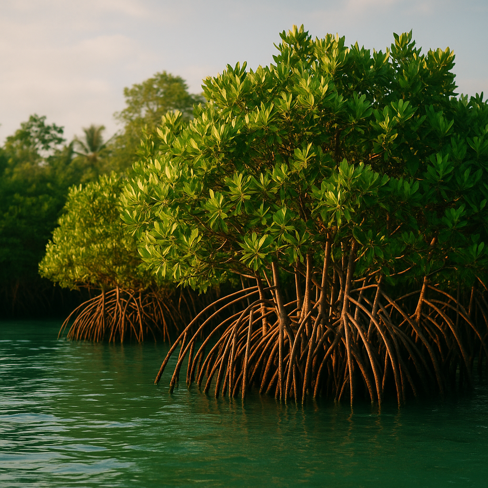
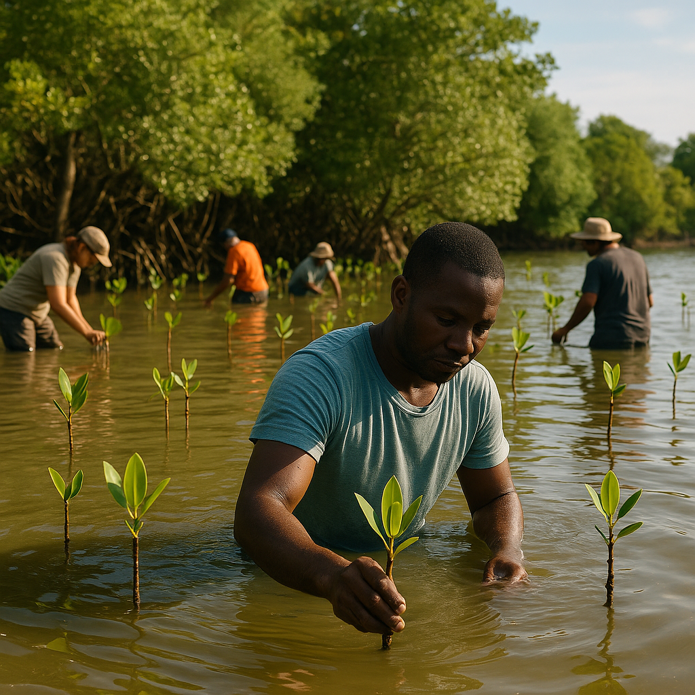
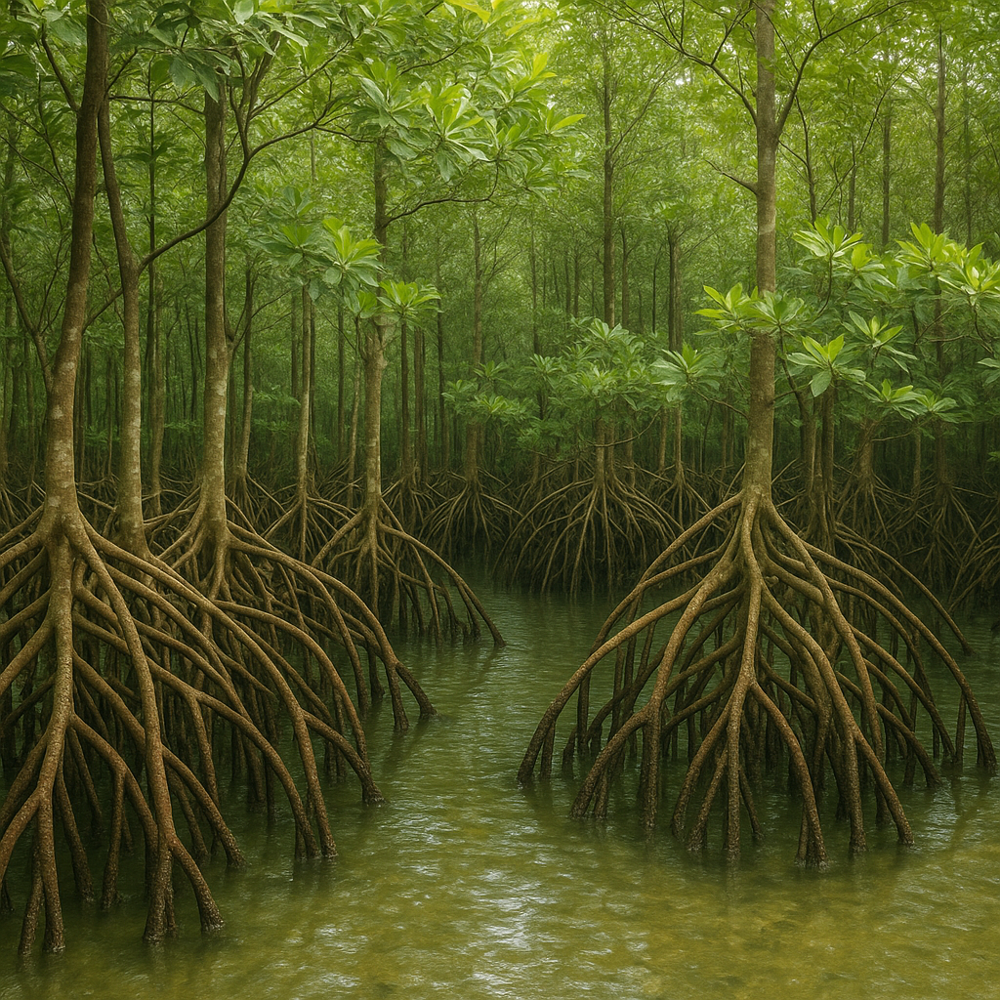
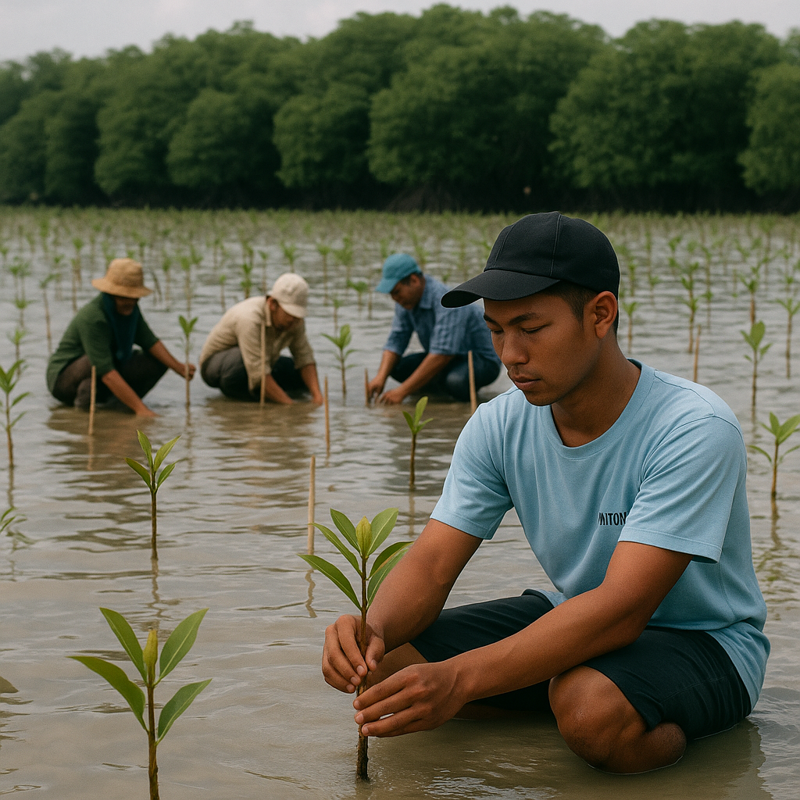
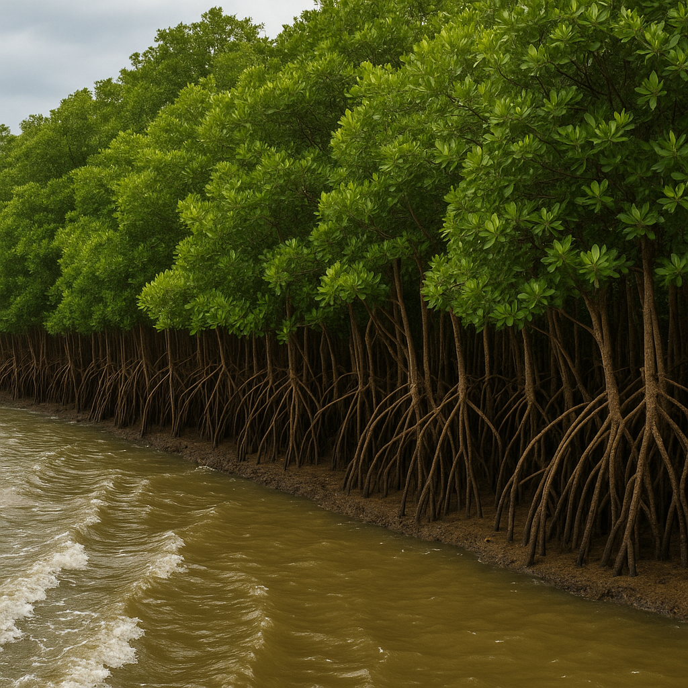
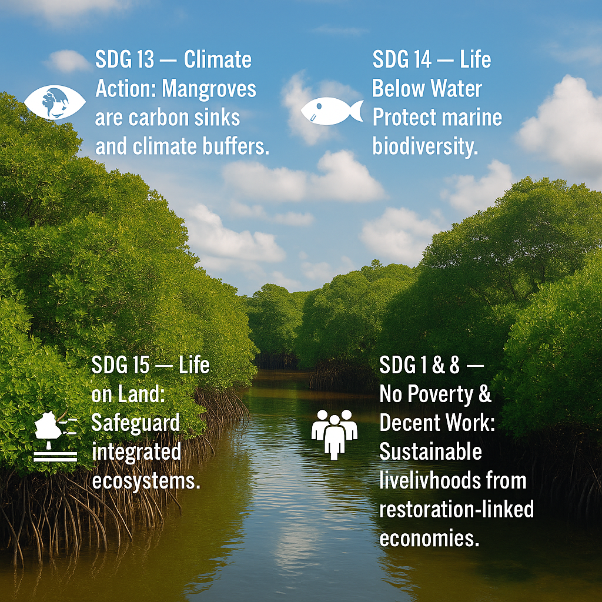
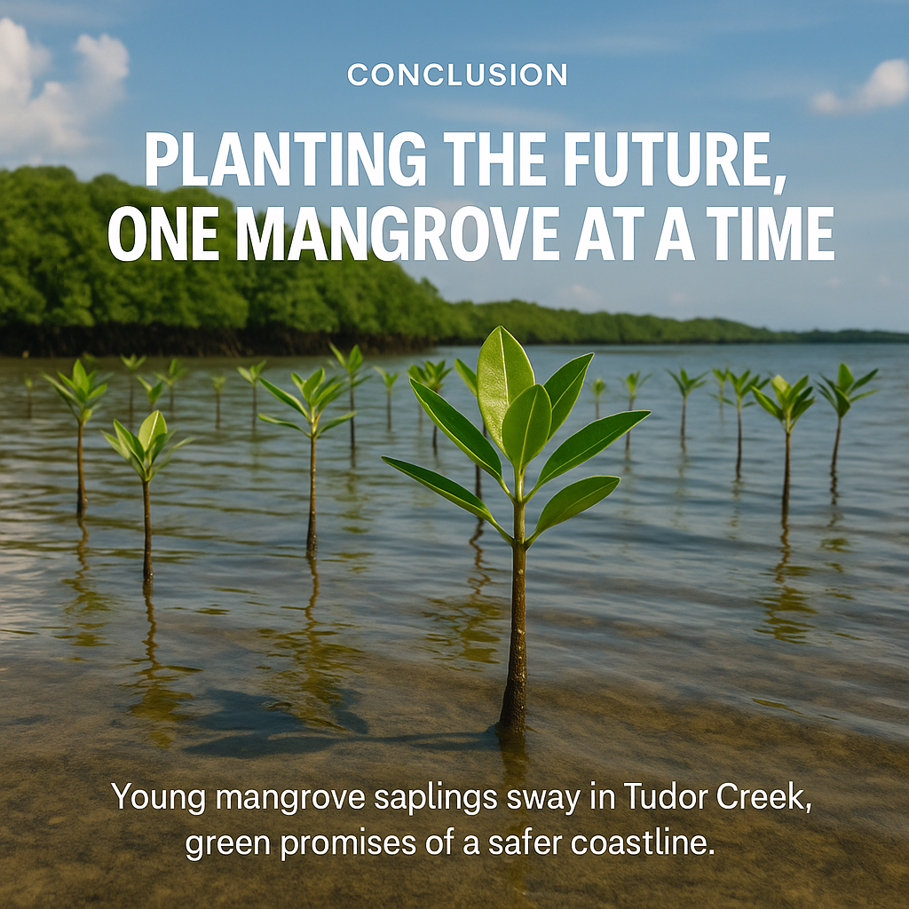

I grew up with the salt air of Mombasa in my lungs.
As a boy, I wandered the tidal edges of Tudor Creek, watching fiddler crabs skitter between mangrove roots and herons take flight over glassy waters.
Back then, the mangrove forests felt endless—gnarled green fortresses holding the shore together.
Today, they’re patchy.
Rising seas lap higher than they used to.
The floods creep further inland.
And I’ve watched with a heavy heart as patches of mangroves gave way to plastic-choked mudflats and concrete.
But here’s the thing: these aren’t just trees.
They’re carbon vaults, biodiversity hotels, and storm shields all rolled into one.
In the fight for coastal survival, mangroves are frontline warriors—and allies we can’t afford to lose.
What Are Mangroves & Why They Matter

Mangroves are salt-tolerant trees and shrubs growing in intertidal zones where land meets the sea. .
They thrive in conditions most plants would find hostile — brackish water, shifting tides, and low oxygen soils.
Their importance goes far beyond their twisted roots:
- 🌍 Blue Carbon Powerhouses — They store up to up four times more carbon per hectare than tropical rainforests.
- 🛡 Natural Flood Defenses — Mangrove roots dissipate wave energy, reducing storm surge impacts by up to 60%+.
- 🐟 Biodiversity Havens — They’re nurseries for fish, crustaceans, and countless marine species.
Mangroves & Blue Carbon: Nature’s Climate Technology
“Blue carbon” refers to the carbon stored in coastal and marine ecosystems — mangroves, seagrasses, and salt marshes.
Mangroves trap organic material in their soils, where it can remain locked away for centuries.
Scientific highlights:
- Indonesia’s mangroves store an estimated 3.14 billion tonnes of carbon.
- Mangrove forests capture carbon at rates up to 10x faster than mature tropical forests.
Unlike engineered carbon capture projects, mangroves come with added bonuses — thriving fisheries, improved water quality, and stronger coastlines.
Case Study 1 — Mombasa’s Tudor Creek Rewilding Efforts

I’ve seen Tudor Creek’s mangrove restoration efforts firsthand.
Local NGOs and community groups have been planting seedlings in degraded areas, often wading waist-deep in the murky waters under a fierce sun.
The impact is visible:
- Juvenile fish are returning.
- The shoreline is more stable in planted areas.
- Residents report less flooding during seasonal high tides.
But challenges persist: urban sprawl, plastic waste, and limited funding often stall momentum.
Without consistent community engagement and policy backing, gains remain fragile.
Case Study 2 — India’s Sundarbans Mangrove Belt

Spanning India and Bangladesh, the Sundarbans form the largest continuous mangrove forest in the world.
Here, mangroves act as buffers against cyclones.
- During Cyclone Amphan (2020), mangroves helped absorb the brunt of wind and wave energy.
- Local communities benefit from fishing, crab harvesting, and honey production.
Yet upstream damming, deforestation, and saltwater intrusion threaten their long-term survival.
Case Study 3 — Indonesia’s National Mangrove Restoration Drive

Indonesia has pledged to restore over 600,000 hectares of mangroves by 2024, integrating the effort into its climate commitments.
- Carbon credits from restored mangroves are being traded in voluntary carbon markets.
- Restoration is creating jobs and supporting eco-tourism ventures.
This national-scale approach shows how policy, economics, and ecology can align.
Additional Global Sparks
- Florida Everglades (USA) — Mangroves shield coastal cities from hurricanes.
- Fiji — Community-led mangrove preservation supports healthy coral reefs.
- Madagascar — Villagers monitor mangroves using drones and GPS mapping.
Mangroves & Coastal Resilience — The Flood Barrier We Need

Mangrove roots slow water flow, trap sediments, and break wave energy before it reaches human settlements.
In urbanized parts of Mombasa like Nyali, restored mangroves could mean the difference between seasonal inconvenience and catastrophic flooding.
Linking to the UN SDGs

- 🌏 SDG 13 — Climate Action: Mangroves are carbon sinks and climate buffers.
- 🐠 SDG 14 — Life Below Water: Protect marine biodiversity.
- 🌳 SDG 15 — Life on Land: Safeguard integrated ecosystems.
- 💼 SDG 1 & 8 — No Poverty & Decent Work: Sustainable livelihoods from restoration-linked economies.
Actionable POVs — Scaling Mangrove Impact
- Community Ownership — Hire and train locals to plant, monitor, and protect mangroves.
- Policy Integration — Embed blue carbon accounting in national climate strategies.
- Restoration Economics — Incentivize restoration through carbon markets and eco-tourism.
- Education — Launch school “mangrove clubs” to instill stewardship early.
- Tech Tracking — Use drones and satellite imagery to monitor growth and detect threats.
Conclusion — Planting the Future, One Mangrove at a Time

Standing at the water’s edge in Tudor Creek today, I see young mangrove saplings swaying with the tide — green promises of a safer coastline.
These trees are more than scenery.
They’re our shield, our pantry, our carbon bank.
If we protect the roots at the edge of the sea, we protect the roots of our own survival.
Now is the time to plant — not just for us, but for the generations who will inherit both the tide and the land we leave behind.